Create a section view
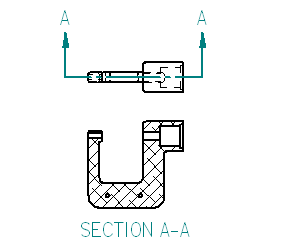
In the next few steps, create a section view, as shown above.
To create section views, first define a cutting plane on an existing drawing view using the Cutting Plane command.
Then use the Section command to select the cutting plane and place the section view.
Choose Home tab→Drawing Views group→Cutting Plane command
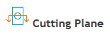
.On the drawing sheet, click the drawing view shown below.
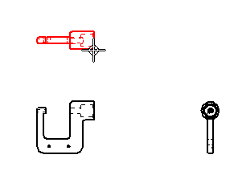
The command ribbon changes to display commands for drawing 2D elements.
The Line command is active.
Zoom in to draw the cutting plane line.
At the bottom-right side of the Solid Edge application window, click Zoom Area  .
.
Click above and to the left of the drawing view, and then click below and to the right to zoom in around the drawing view.
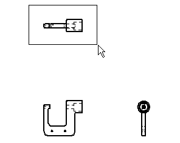
After resizing the view area, right-click to exit the Zoom Area command.
Ensure that the Home tab→Draw group→Line command is running.
Position the cursor over the midpoint of the edge shown in the illustration below, but do not click.
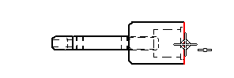
When the midpoint relationship indicator displays, move the cursor to the right as shown below.
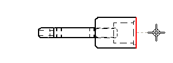
Notice that a dashed line displays between the highlighted edge and the cursor. This indicates that the start point of the line is aligned to the midpoint of the edge.
Click to place the start point of the line.
Move the cursor to the left as shown below, and when the horizontal relationship indicator displays, click to place the end point of the line.
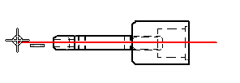
Right-click to restart the Line command.
Choose Home tab→Close Cutting Plane .
The cutting plane options are hidden.
The cutting plane line should display similar to the illustration below.
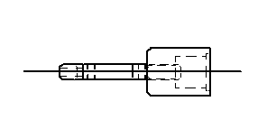
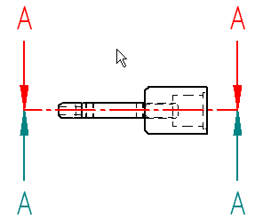
Move the cursor above and below the cutting plane line, and notice that the view direction arrows flip as the cursor crosses the cutting plane line.
Position the cursor above the cutting plane line, as shown in the illustration above, and then click to define the cutting plane direction.
The cutting plane should display as shown below. Depending on the template used to create the draft file, the cutting plane direction arrows might display with a different symbol.
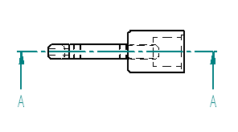
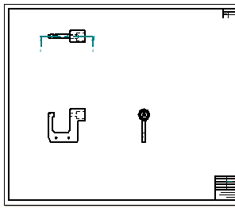
-
On the status bar at the bottom of the application window, choose Fit
 to fit the drawing sheet to the application window.
to fit the drawing sheet to the application window.
Choose Home tab→Drawing Views group→Section .
Click the cutting plane line created previously, as shown below.
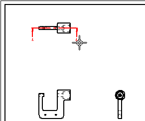
Position the cursor as shown below, and then click to place the section view.
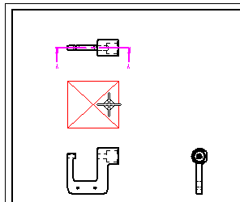
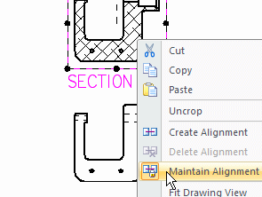
When creating a section view, by default it aligns with its source view. To move the section view independently of its source view, clear the Maintain Alignment option first.
Press Esc to start the Select command  .
.
Position the cursor over the section view, and then right-click to display the shortcut menu.
On the shortcut menu, click Maintain Alignment to clear the Maintain Alignment option, as shown above.
Drag the cursor to move the section view to the location shown below.
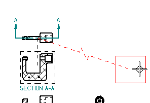
Notice that a dashed line connects the selected section view to its source view.
This indicator makes it easy to determine the source view for the section view later.
Click in empty space to clear the selection of the section view.
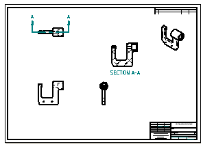
-
On the Quick Access toolbar, choose Save
 .
.